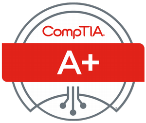
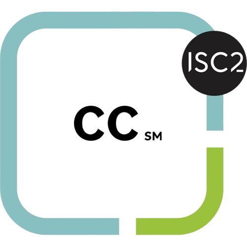

Defense in depth | Every layer assumes the one above it failed.
// About me
Security-focused IT professional with 15+ years in customer-facing roles and 2 years of hands-on IT and security work. Day to day I manage endpoints, administer Active Directory across on-premise and cloud environments, and investigate threats using tools like Hybrid Analysis and CrowdStrike Falcon.
I've always been drawn to the investigative side of security — the how, the why, the who. I built a home SOC lab running Security Onion, Kali Linux, and Elastic Agent because the best way to learn defense is to understand offense.
ISC2 CC certified. Currently pursuing CompTIA Security+. Outside the terminal — family guy, car tinkerer, artist, and proud debate opponent of my three kids.
// What I work with
Tools & Platforms
Soft Skills
Certifications

A+ CompTIA
CC ISC2// What I've built
Built a fully functional home security operations environment running on a NAS. Hosts a Plex server, Docker containers, and an Alma Linux 9 Apache web server. An Elastic Agent reports logs back to Security Onion inside a VM on a Kali Linux laptop. Uses Kali to simulate real attacks against the Apache server — all activity caught, logged, and triaged through the SO-Lab dashboard.
Community
Active on TryHackMe and HackTheBox, regularly competing in Capture The Flag challenges with a dedicated group. Builds both offensive and defensive thinking by solving real-world attack and detection scenarios.
MSP
Day-to-day responsibilities include creating and resolving tickets across multiple client environments, triaging and troubleshooting endpoint issues, and reviewing quarantined emails for release or escalation. Handles user provisioning in Microsoft 365 and Active Directory, manages device onboarding and offboarding, and supports clients across diverse infrastructure stacks.
// Get in touch
Open to Junior SOC Analyst roles and cybersecurity opportunities. Feel free to reach out — I'd love to talk.
// Work History
MSP — Managed Service Provider
Day-to-day responsibilities include creating and resolving tickets across multiple client environments, triaging and troubleshooting endpoint issues, and reviewing quarantined emails for release or escalation. Handles user provisioning in Microsoft 365 and Active Directory, manages device onboarding and offboarding, and supports clients across diverse infrastructure stacks — applying structured troubleshooting and clear communication at every step.
Self-Built Security Operations Environment
Built and maintain a personal SOC environment running on a NAS, hosting Alma Linux 9 with Apache, Docker containers, and Plex. An Elastic Agent on the server ships logs to Security Onion running inside a VM on a Kali Linux laptop. Uses Kali to simulate real attacks — scanning, exploitation attempts, and brute force — with all activity caught, logged, and triaged through the SO-Lab dashboard. Future plans include expanding detection rules, integrating additional log sources, building custom dashboards, and simulating more advanced threat scenarios including lateral movement and persistence techniques.
// Hands-on Work
Home Lab
NAS-hosted lab running Alma Linux 9, Apache, Docker, and Plex. Elastic Agent reports to Security Onion in a VM. Kali Linux used to simulate attacks — all activity logged and triaged through SO-Lab dashboard.
CTF & Platforms
Active on both platforms, working through offensive and defensive challenges. Regularly competes in CTF events with a dedicated group, building real-world attack and detection skills.
// Credentials